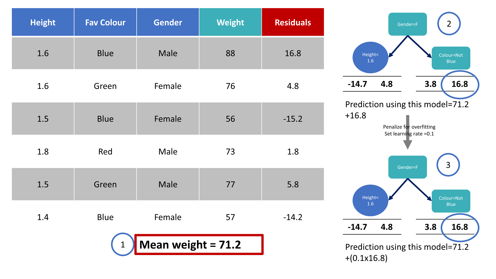
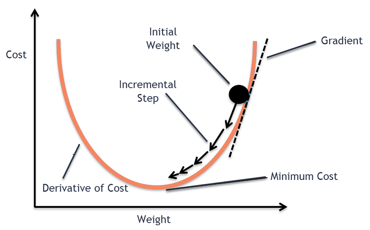
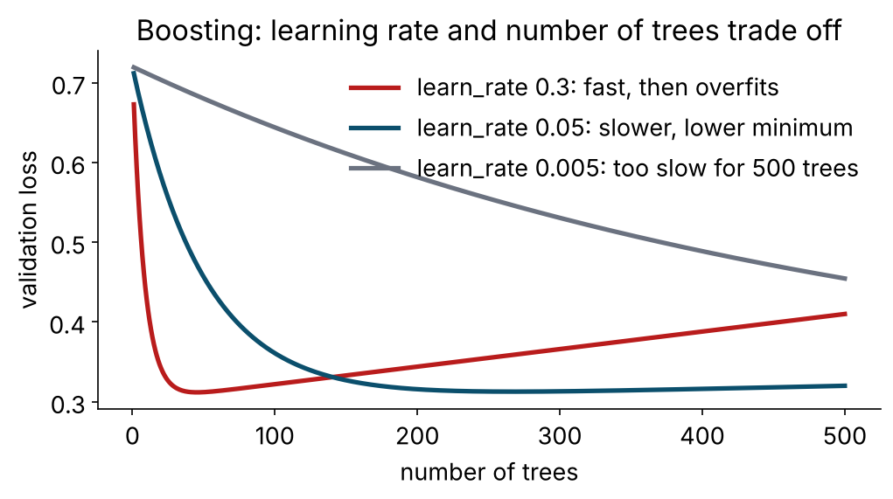

boost_tree(trees = 500, learn_rate = 0.03, tree_depth = 3, min_n = 20, sample_size = 0.8) |>
set_engine("xgboost") |>
set_mode("classification")05 · Predictive Intelligence in R · Day 2, 09.15–10.30 · Tutorial 4
2026-11-12
| Bagging (random forest, yesterday) | Boosting (today) | |
|---|---|---|
| Trees are | deep, independent, grown in parallel | shallow, sequential, each fixes the last |
| Reduces mainly | variance | bias (and variance via shrinkage and subsampling) |
| Combines by | voting / averaging | adding, with a learning rate |
| Overfits when | rarely — more trees never hurt | too many rounds, high learning rate, deep trees |
| Tuning sensitivity | low | high |
| Typical tabular ranking | very good | best in class, when tuned |

Adapted from StatQuest (2019)

“How wrong, in which direction” is the gradient of the loss with respect to the current prediction. For log-loss and a probability output that gradient is simply observed − predicted. Each new tree is a step downhill on the loss function; the learning rate is the step size. Gradient descent in the space of trees — the same idea trains neural networks this afternoon, with weights instead of trees.
Hikmat et al. (2021)

Small steps + many trees: slow, smooth, lower minimum. Big steps: fast, then overshoots and overfits. Rule: fix a learning rate in 0.01–0.1, then let early stopping or cross-validation choose the number of trees. Do not tune both freely.
| What | Why it matters |
|---|---|
| Regularised objective — λ on leaf weights, γ to prune splits whose gain is too small | less overfitting than plain GBM; the knobs loss_reduction (γ) and penalty (λ) |
| Similarity score / gain instead of Gini | splits chosen by how much they improve the regularised loss |
| Approximate split finding (weighted quantile sketch) | fast on large n |
| Sparsity-aware splits | learns a default direction for missing values — no imputation needed |
| Row and column subsampling | forest-style decorrelation inside boosting (sample_size, mtry) |
| Parallel, cache-aware | uses all your cores |
Cousins: LightGBM (leaf-wise growth, very fast; bonsai), CatBoost (ordered boosting, native categoricals). Same ideas, different engineering.
Four patients. The drug helps at medium doses, not at the extremes — so no straight line separates Yes from No.
| Dosage | Effective? | obs | residual = obs − 0.5 |
|---|---|---|---|
| low | No | 0 | −0.5 |
| med-lo | Yes | 1 | +0.5 |
| med-hi | Yes | 1 | +0.5 |
| high | No | 0 | −0.5 |
Everyone starts with the same guess: probability 0.5 (log-odds 0). The residual is how wrong we are: observed − predicted.
This is the StatQuest “XGBoost Part 2: Classification” example. We’ll build the first tree with real numbers.
\[\text{Similarity}=\frac{\left(\sum \text{residual}\right)^2}{\sum p(1-p)+\lambda}\qquad(\lambda=0\text{ for now})\]
The denominator \(\sum p(1-p)\) is the Cover — how much information the group carries. At \(p=0.5\) each person adds \(0.25\).
Root (all four residuals): \[\text{Sim}=\frac{(-0.5+0.5+0.5-0.5)^2}{4(0.25)+0}=\frac{0}{1}=\mathbf{0}\]
Residuals that cancel → similarity 0 (a useless group). Residuals that are large and agree → high similarity. The tree’s job is to split the pile into agreeing groups.
Split the lowest dose (the first No) off from the other three:
| residuals | \(\sum p(1-p)\) | Similarity | |
|---|---|---|---|
| Left leaf | −0.5 | 0.25 | \((-0.5)^2/0.25=\mathbf{1.00}\) |
| Right leaf | +0.5, +0.5, −0.5 | 0.75 | \((0.5)^2/0.75=\mathbf{0.33}\) |
\[\text{Gain}=\text{Sim}_{\text{left}}+\text{Sim}_{\text{right}}-\text{Sim}_{\text{root}}=1.00+0.33-0=\mathbf{1.33}\]
XGBoost tries every threshold and keeps the biggest Gain — this is what replaces Gini.
Cover check: min_child_weight (default 1) is the smallest Cover a leaf may have. At p≈0.5 that’s ~4 people — so on a toy this small you’d lower it; on real data it just means “no micro-leaves.”
Put λ = 1 into every denominator and redo the same split:
| Similarity (λ=0) | Similarity (λ=1) | |
|---|---|---|
| Left leaf | \(0.25/0.25=1.00\) | \(0.25/1.25=\mathbf{0.20}\) |
| Right leaf | \(0.25/0.75=0.33\) | \(0.25/1.75=\mathbf{0.14}\) |
| Gain | 1.33 | 0.34 |
λ shrinks every similarity → shrinks the Gain → fewer splits look worthwhile, and (next slide) the steps get smaller. λ = “don’t trust small groups.”
Rule: keep a split only if Gain > γ. (Equivalently, prune if \(\text{Gain}-\gamma<0\).)
With our Gain = 1.33 (and λ=0):
| γ | Gain − γ | Decision |
|---|---|---|
| 0.0 | +1.33 | keep |
| 1.0 | +0.33 | keep |
| 1.5 | −0.17 | prune — collapse the split back to a leaf |
γ is your “minimum worthwhile improvement.” Bigger γ → simpler tree. In tidymodels it’s loss_reduction.
The leaf’s output uses the same numerator, but not squared: \[\text{Output}=\frac{\sum \text{residual}}{\sum p(1-p)+\lambda}\;\Rightarrow\; \text{Left}=\frac{-0.5}{0.25}=\mathbf{-2.0},\quad \text{Right}=\frac{0.5}{0.75}=\mathbf{+0.67}\]
Update each person, shrunk by the learning rate η = 0.3: \(\;\log(\text{odds})_{\text{new}}=\log(\text{odds})_{\text{old}}+\eta\cdot\text{Output}\), then \(p=\dfrac{1}{1+e^{-\log(\text{odds})}}\).
| Leaf | new log-odds | new probability |
|---|---|---|
| Left (the No) | \(0+0.3(-2.0)=-0.6\) | \(1/(1+e^{0.6})=\mathbf{0.35}\) — pushed toward No |
| Right (mostly Yes) | \(0+0.3(0.67)=+0.20\) | \(1/(1+e^{-0.2})=\mathbf{0.55}\) — nudged toward Yes |
Now recompute residuals from these new probabilities, grow the next tree, repeat hundreds of times.
| Dial | tidymodels |
What it did above | Turn it up → |
|---|---|---|---|
| λ lambda | penalty |
shrank similarity 1.00 → 0.20 | fewer/weaker splits, smaller steps |
| γ gamma | loss_reduction |
pruned the split once Gain < γ | simpler tree |
| η eta | learn_rate |
scaled the step by 0.3 | faster, but overshoots |
| depth | tree_depth |
how many splits deep we go | more interactions, more overfit |
| cover | min_n |
min Cover \(\sum p(1-p)\) per leaf | bigger leaves, less overfit |
Every “knob” is just a number in these two formulas. That’s all XGBoost is — Gini replaced by Gain on a regularised loss, repeated in small steps.
Where you meet it: glmnet (penalty, mixture); XGBoost (λ, γ, loss_reduction); SVM (cost is 1/λ); neural networks (weight decay).
Regularisation = a deliberate bit of bias bought with a large drop in variance.
boost_tree()| Arg | xgboost name | Meaning | Start |
|---|---|---|---|
trees |
nrounds | boosting rounds | 500 with early stopping, or tune |
learn_rate |
eta | step size | 0.01–0.1 |
tree_depth |
max_depth | depth of each weak learner | 3–6 |
min_n |
min_child_weight | minimum (weighted) people per leaf | 10–30 |
loss_reduction |
gamma | minimum gain to split | 0–1 |
sample_size |
subsample | row fraction per tree | 0.7–1 |
mtry |
colsample_bynode | columns per split (counts = FALSE → proportion) |
0.5–1 |
XGBoost needs numeric predictors: the recipe must dummy-code factors. Scaling is irrelevant to trees but harmless — so one recipe serves all four families.
model_zoo <- list(
logistic = logistic_reg() |> set_engine("glm"),
rf = rand_forest(trees = 500, mtry = 6, min_n = 10) |> set_engine("ranger") |> set_mode("classification"),
svm_rbf = svm_rbf(cost = 1, rbf_sigma = 0.005) |> set_engine("kernlab") |> set_mode("classification"),
xgb = boost_tree(trees = 500, learn_rate = 0.03, tree_depth = 3, min_n = 20) |> set_engine("xgboost") |> set_mode("classification")
)
bakeoff_res <- workflow_set(preproc = list(base = dm_rec), models = model_zoo) |>
workflow_map("fit_resamples", resamples = dm_folds, metrics = cls_metrics, seed = 2026)
rank_results(bakeoff_res, rank_metric = "roc_auc", select_best = TRUE)
autoplot(bakeoff_res, metric = c("roc_auc", "brier_class"))preproc can hold several recipes → every recipe × every model.workflow_map("tune_race_anova", ...) tunes them all the same way.| Criterion | Logistic | Random forest | XGBoost | SVM |
|---|---|---|---|---|
| Discrimination on tabular data | good | very good | best, tuned | good |
| Calibration out of the box | good | fair (shrinks to the middle) | fair | poor (Platt) |
| Interpretability | coefficients | importance | importance | none |
| Training / prediction speed | instant | fast / slower | fast / fast | slow (n²) / fast |
| Handles missing natively | no | no (ranger) | yes | no |
| Tuning sensitivity | low | low | high | high |
| Deployable as a paper score | yes | no | no | no |
If models are within one standard error, pick on calibration, interpretability, speed and deployability. On this data that is usually logistic regression or a lightly tuned XGBoost — and the neural network this afternoon will not change that ranking.
tutorials/04_xgboost.qmd)Then tea, then resampling and tuning.
Predictive Intelligence in R · CePH Series 5 · Nov 2026